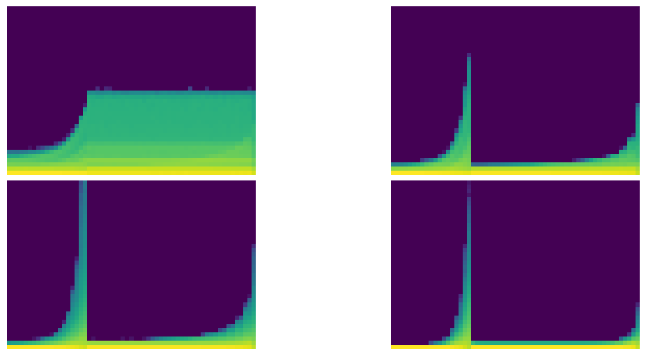

Exported source
from __future__ import annotations
import random,math,torch,numpy as np,matplotlib.pyplot as plt
import fastcore.all as fc
from functools import partial
from fastAIcourse.datasets import *
from fastAIcourse.learner import *set_seed (seed, deterministic=False)
import torch.nn.functional as F,matplotlib as mpl
from pathlib import Path
from operator import attrgetter,itemgetter
from contextlib import contextmanager
from torch import tensor,nn,optim
import torchvision.transforms.functional as TF
from datasets import load_dataset
from fastcore.test import test_close
torch.set_printoptions(precision=2, linewidth=140, sci_mode=False)
mpl.rcParams['figure.constrained_layout.use'] = True
import logging
logging.disable(logging.WARNING)cnn_layers ()
def conv(ni, nf, ks=3, act=True):
res = nn.Conv2d(ni, nf, stride=2, kernel_size=ks, padding=ks//2)
if act: res = nn.Sequential(res, nn.ReLU())
return res
def cnn_layers():
return [
conv(1 ,8, ks=5), #14x14
conv(8 ,16), #7x7
conv(16,32), #4x4
conv(32,64), #2x2
conv(64,10, act=False), #1x1
nn.Flatten()]conv (ni, nf, ks=3, act=True)
We want to train quickly, so that means training at a high learning rate.
fit (model, epochs=1, xtra_cbs=None)
SequentialModel (*layers)
*Base class for all neural network modules.
Your models should also subclass this class.
Modules can also contain other Modules, allowing to nest them in a tree structure. You can assign the submodules as regular attributes::
import torch.nn as nn
import torch.nn.functional as F
class Model(nn.Module):
def __init__(self):
super().__init__()
self.conv1 = nn.Conv2d(1, 20, 5)
self.conv2 = nn.Conv2d(20, 20, 5)
def forward(self, x):
x = F.relu(self.conv1(x))
return F.relu(self.conv2(x))Submodules assigned in this way will be registered, and will have their parameters converted too when you call :meth:to, etc.
.. note:: As per the example above, an __init__() call to the parent class must be made before assignment on the child.
:ivar training: Boolean represents whether this module is in training or evaluation mode. :vartype training: bool*
class SequentialModel(nn.Module):
def __init__(self, *layers):
super().__init__()
self.layers = nn.ModuleList(layers)
self.act_means = [[] for _ in layers]
self.act_stds = [[] for _ in layers]
def __call__(self, x):
for i,l in enumerate(self.layers):
x = l(x)
self.act_means[i].append(to_cpu(x).mean())
self.act_stds [i].append(to_cpu(x).std ())
return x
def __iter__(self): return iter(self.layers)| accuracy | loss | epoch | train |
|---|---|---|---|
| 0.156 | 2.297 | 0 | train |
| 0.290 | 1.984 | 0 | eval |
Ideally, mean is always about zero and std always around one.
Hooks are PyTorch object you can add to any nn.Module. A hook will be called when a layer, it is registered to, is executed during the forward pass (forward hook) or the backward pass (backward hook). Hooks don’t require us to rewrite the model.
A hook is attached to a layer, and needs to have a function that takes three arguments: module, input, output. Here we store the mean and std of the output in the correct position of our list.
append_stats (i, mod, inp, outp)
We can refactor this in a Hook class. It’s very important to remove the hooks when they are deleted, otherwise there will be references kept and the memory won’t be properly released when your model is deleted.
Hook (m, f)
Initialize self. See help(type(self)) for accurate signature.
append_stats (hook, mod, inp, outp)
DummyCtxMgr ()
Initialize self. See help(type(self)) for accurate signature.
DummyList (iterable=())
*Built-in mutable sequence.
If no argument is given, the constructor creates a new empty list. The argument must be an iterable if specified.*
Hooks (ms, f)
*Built-in mutable sequence.
If no argument is given, the constructor creates a new empty list. The argument must be an iterable if specified.*
class Hooks(list):
def __init__(self, ms, f): super().__init__([Hook(m, f) for m in ms])
def __enter__(self, *args): return self
def __exit__ (self, *args): self.remove()
def __del__(self): self.remove()
def __delitem__(self, i):
self[i].remove()
super().__delitem__(i)
def remove(self):
for h in self: h.remove()HooksCallback (hookfunc, mod_filter=<function noop>, on_train=True, on_valid=False, mods=None)
Initialize self. See help(type(self)) for accurate signature.
class HooksCallback(Callback):
def __init__(self, hookfunc, mod_filter=fc.noop, on_train=True, on_valid=False, mods=None):
fc.store_attr()
super().__init__()
def before_fit(self, learn):
if self.mods: mods=self.mods
else: mods = fc.filter_ex(learn.model.modules(), self.mod_filter)
self.hooks = Hooks(mods, partial(self._hookfunc, learn))
def _hookfunc(self, learn, *args, **kwargs):
if (self.on_train and learn.training) or (self.on_valid and not learn.training): self.hookfunc(*args, **kwargs)
def after_fit(self, learn): self.hooks.remove()
def __iter__(self): return iter(self.hooks)
def __len__(self): return len(self.hooks)| accuracy | loss | epoch | train |
|---|---|---|---|
| 0.162 | 2.301 | 0 | train |
| 0.326 | 2.131 | 0 | eval |
append_stats (hook, mod, inp, outp)
set_seed(1)
model = nn.Sequential(*cnn_layers())
hc = HooksCallback(append_stats, mod_filter=fc.risinstance(nn.Conv2d))
fit(model, xtra_cbs=[hc]);| accuracy | loss | epoch | train |
|---|---|---|---|
| 0.156 | 2.297 | 0 | train |
| 0.287 | 1.993 | 0 | eval |
get_hist (h)
fig,axes = get_grid(len(hc), figsize=(11,5))
for ax,h in zip(axes.flat, hc):
show_image(get_hist(h), ax, origin='lower')
get_min (h)
ActivationStats (mod_filter=<function noop>)
Initialize self. See help(type(self)) for accurate signature.
class ActivationStats(HooksCallback):
def __init__(self, mod_filter=fc.noop): super().__init__(append_stats, mod_filter)
def color_dim(self, figsize=(11,5)):
fig,axes = get_grid(len(self), figsize=figsize)
for ax,h in zip(axes.flat, self):
show_image(get_hist(h), ax, origin='lower')
def dead_chart(self, figsize=(11,5)):
fig,axes = get_grid(len(self), figsize=figsize)
for ax,h in zip(axes.flatten(), self):
ax.plot(get_min(h))
ax.set_ylim(0,1)
def plot_stats(self, figsize=(10,4)):
fig,axs = plt.subplots(1,2, figsize=figsize)
for h in self:
for i in 0,1: axs[i].plot(h.stats[i])
axs[0].set_title('Means')
axs[1].set_title('Stdevs')
plt.legend(fc.L.range(self))| accuracy | loss | epoch | train |
|---|---|---|---|
| 0.156 | 2.297 | 0 | train |
| 0.297 | 1.995 | 0 | eval |